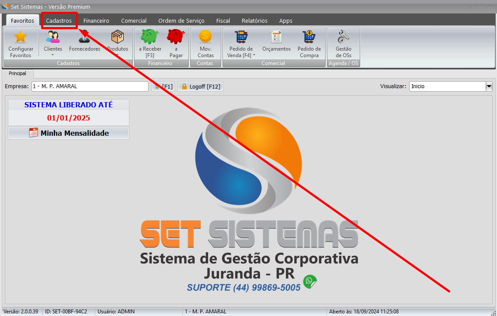
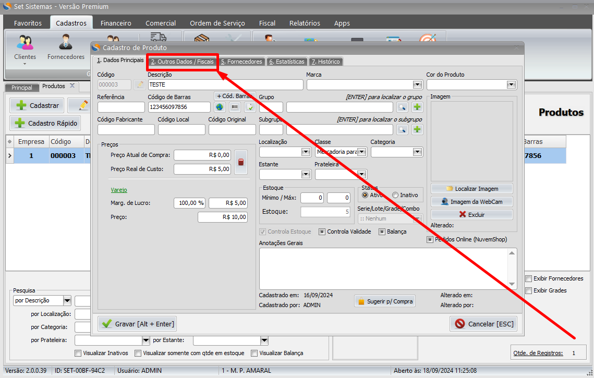
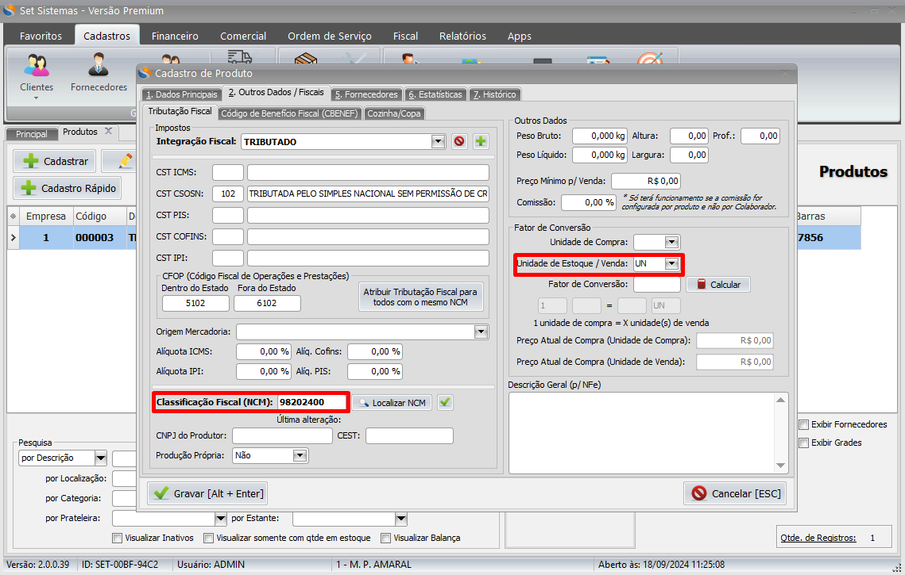

Introdução
Para cadastrar um produto dentro do sistema da Set Sistemas(Retaguarda), clique na tela de cadastros.

Após clicar em cadastros, clique na opção produtos, que será aberta em
uma nova aba com as opções dos produtos. Essa tela tem duas opções: O
cadastrar e o cadastrar rápido.
Vamos começar com o Cadastro.
Na tela cadastrar temos as seguintes informações.
Para fazer o cadastro de um produto devemos preencher a descrição
dele, se esse produto tiver codigo de barra, podemos escrever ele ou
se você tiver um leitor poderá passar pelo codigo de barra para ele
ser inserido no sistema, podemos colocar uma referência nesse produto
para ficar mais fácil de localizar ele
Se acaso você precisar saber quantos está ganhando de lucro nesse
produto é só preencher a opção preço real de custo
Para terminar de cadastrar esse produto vamos na aba ao lado dela 2. Outros Dados / Fiscais
Nessa Nova Aba temos que preencher a parte da integração fiscal, no caso seria como sua empresa se encaixa em regime normal ou simples nacional
Feito isso devemos informar o NCM do Produto, O NCM e um codigo de 8 dígitos que existe do produto para saber o NCM Devemos procurar ele na internet com o nome dele, também devemos informar a Unidade de Estoque / Venda, se o produto for vendido por unidade deve informa no campo Unidade de Estoque / Venda A siglas UN, se acaso esse produto for Por Peso deve informar KG e assim por diante
